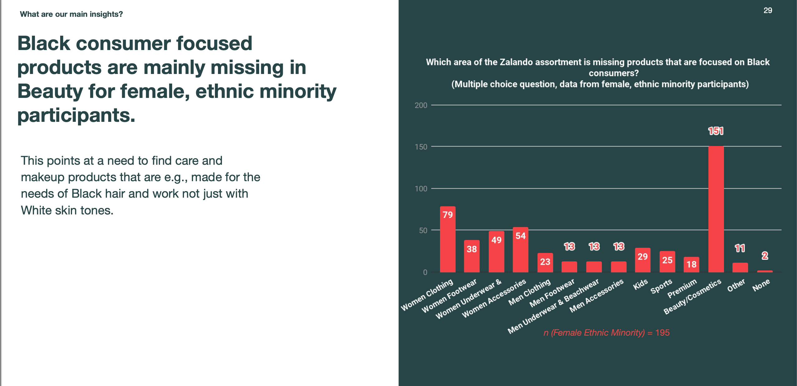

The challenge
Zalando wanted an assortment that reflects its whole customer base. The onboarding effort needed customer evidence.
Case 05 · Zalando
Part of a company-wide Diversity & Inclusion strategy. Are Black-owned and Black-consumer-focused brands actually missing from the platform, in which categories, and for whom does it matter most?
Zalando wanted an assortment that reflects its whole customer base. The onboarding effort needed customer evidence.
A large multi-market survey across seven European markets, designed to separate Black-owned from Black-focused, using a validated ethnic-belonging scale, then de-averaged by belonging and gender.
Presented to category buyers as an evidence base. Fed Zalando's do.Better strategy and its public commitment to onboard 70+ Black-owned brands.

The average hid the people the research was actually about.
The full story
As part of a company-wide Diversity & Inclusion strategy, Zalando wanted to build an assortment that reflects its whole customer base rather than excluding ethnic minorities. The assortment workstream needed evidence: are Black-owned and Black-consumer-focused brands actually missing from the platform as customers experience it, in which categories, and for whom does it matter most? Our research set out to answer that so the onboarding effort could be grounded in customer evidence rather than assumption.
This was a team project with four authors. I owned the quantitative phase end to end: I designed the survey, ran the analysis, and built the segmented read of the results. A qualitative focus group with the company's Black employee community, run by my colleague Stefano, preceded the survey and shaped the questions.
A large multi-market survey (around 7,300 respondents across seven European markets after data cleaning). Two design decisions shaped it.
One was keeping two ideas separate that are easy to blur: a brand being Black-owned is not the same as a brand making products built for Black consumers' needs. If we let those run together, neither the findings nor the action that followed would be clear, so I built the survey to ask about them separately. The other was using an existing, validated scale for ethnic belonging instead of writing my own, so the segmentation stood on solid ground.
The analytical move that mattered most was de-averaging. Looking at the whole sample, the gap looked modest. But breaking the results down by ethnic belonging and gender showed the picture is completely different depending on who you ask: nearly all Black participants had looked for Black-owned or Black-focused products, and Black female participants in particular reported a sharp gap in Beauty. The average hid the people the research was actually about.
Demand for Black-owned brands exists across all groups, including a meaningful share of White customers, but it's strongest for Black customers, especially women, and concentrates in Beauty and women's clothing. Participants named specific missing brands (Fenty, Iman, Juvia's Place and others), which turned an abstract diversity gap into a concrete, actionable shopping list. The gap in Beauty was specific and practical: customers wanted care and makeup made for Black hair and deeper skin tones, which they couldn't reliably find.
A large share of respondents answered “I don't know” to whether brands were missing, and the open text showed many customers, particularly White respondents, weren't sure what “Black-owned” or “Black-focused” even meant. That widened the problem: there's an assortment gap, but there's also an awareness gap sitting on top of it. Customers can't seek out or value what they can't identify, which pointed toward customer-facing communication and education as part of any solution.
The open text included enthusiastic support, genuine confusion, and some openly racist responses. We made a deliberate choice not to reproduce the racist comments in the readout, on colleagues' feedback, to avoid exposing the team to that material unnecessarily.
We still reported honestly that a critical and sometimes hostile segment exists, because the communication strategy needs to account for it, but we did so without putting the content itself in front of people.
We presented the findings directly to the category buyers responsible for onboarding, giving them a customer-evidence base to work from: clear demand, the specific categories and brands to prioritise, the segments most affected, and the education gap to address alongside the assortment itself. The research fed into Zalando's broader do.Better strategy and its public commitment to onboard 70+ Black-owned brands, helping ground that initiative in what customers actually said they needed.